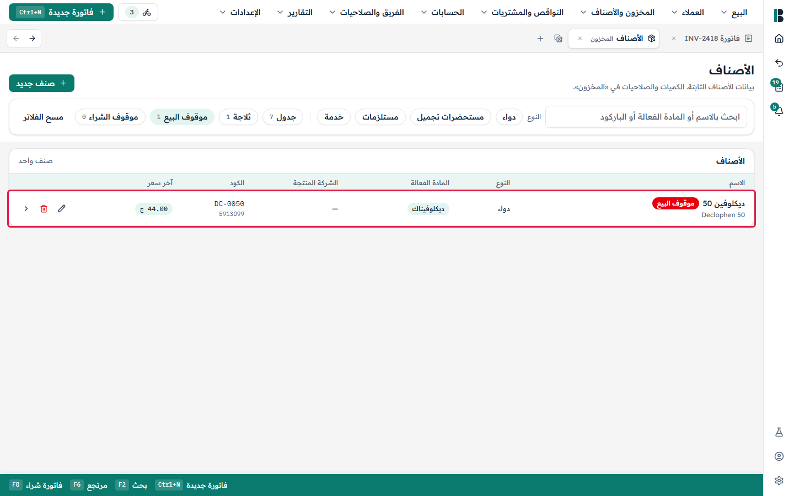
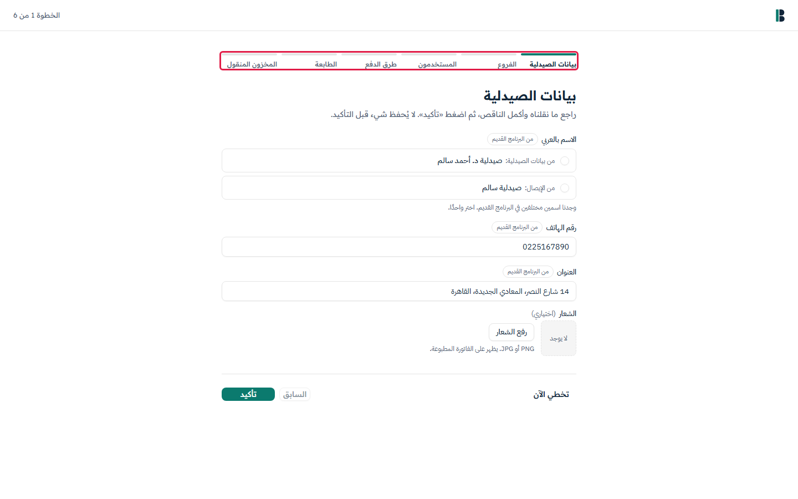
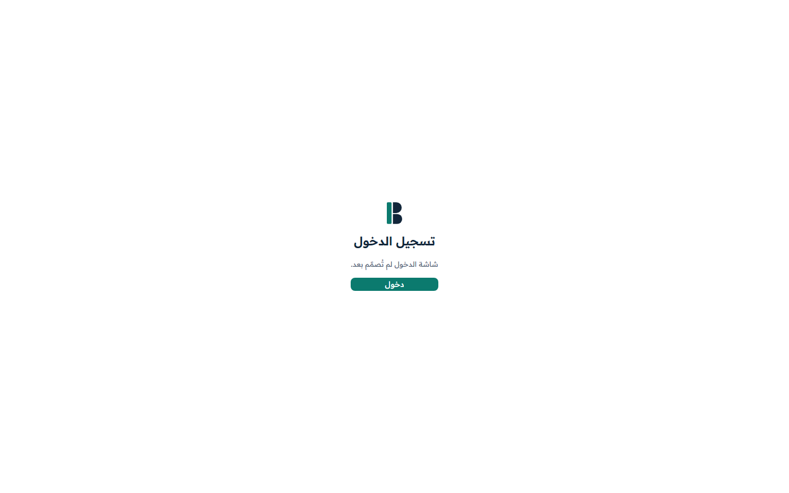

هذه هي الأسئلة المفتوحة من مراجعتنا للتصميم. لكل سؤال: ماذا يفعل التصميم الآن، وما المطلوب منكم أن تقرروه، وما نقترحه.
إذا لم يصلنا رد، نبني اقتراحنا، ويمكن تغييره لاحقًا. وفي بعض البنود تجدون «إلى أن تردّوا نبني»: هناك نبني ما هو مكتوب حتى تقرروا.
مع كل سؤال صورة وفيديو قصير للتصميم في هذا الموضع، والإطار الأحمر يحدد المكان.
الأسئلة مقسمة حسب من يجيب عنها. وداخل كل قسم ترتيبها حسب ترتيب البناء: البيع والعملاء أولًا، ثم المخزون والمشتريات، ثم الإعداد، ثم ما يأتي لاحقًا. نرجو الرد على الأسئلة الأولى أولًا.
الرمز الصغير بجانب كل عنوان (مثل PQ-14) للإشارة إليه عند الرد فقط.
كلمات نستخدمها
تشغيلة:
كمية من صنف وصلت معًا، لها تاريخ صلاحية واحد وتكلفة واحدة وسعر واحد.
ليس للبيع:
بضاعة استُبعدت من البيع لكنها ما زالت في الصيدلية.
إعدام:
إتلاف بضاعة «ليس للبيع» وخصمها من المخزون.
جرد:
عدّ البضاعة على الرفوف ومقارنتها بما يتوقعه بوريت. و«الترحيل» يُغلق الجرد.
آجل:
بيع يدفعه العميل لاحقًا ويُسجَّل على حسابه، في حدود حد الائتمان.
تحصيل:
مبلغ يُستلم لاحقًا عن رصيد آجل أو طلب توصيل.
الدرج:
درج النقدية في جهاز البيع، يُسلَّم من وردية إلى وردية.
تعاقد:
اتفاق مع شركة أو شركة تأمين تتحمل جزءًا من مشتريات أعضائها.
كشكول النواقص:
قائمة الأصناف التي تحتاج الصيدلية إلى شرائها.
B-Connect:
النظام الذي تستخدمه الصيدليات الآن، وسيحل بوريت محله.
الإصدار الأول، التجربة:
الإصدار الأول هو ما تحصل عليه أول صيدليات تستخدم بوريت، والتجربة هي استخدامها له.
ماذا يفعل التصميم الآنتبويب الصلاحيات في التصميم ليس نهائيًا. والإعداد الجاهز للكاشير فيه لا يسمح له بالبيع، وهذا يبدو خطأ.
المطلوب منكمما المسموح لكل دور من البداية؟ وما أقصى خصم يمنحه كل دور؟
اقتراحنانأخذ القيم المبدئية في التصميم: صاحب الحساب بلا حد، والمدير 100%، والصيدلي 10%، والكاشير 0%. ويستطيع الكاشير البيع من نقطة البيع واستخدام الدرج (نتبع هنا قائمة الصلاحيات في التصميم، لا الإعداد الجاهز للكاشير). ويستطيع صاحب الحساب تغيير أي شيء من ذلك لكل شخص.
ماذا يفعل التصميم الآنيعرض التصميم شارة «موقوف البيع» على الصنف، ثم يسمح ببيعه.
المطلوب منكمما الذي لا يُباع أبدًا: التشغيلات منتهية الصلاحية فقط، أم أيضًا القريبة من انتهاء الصلاحية والأصناف «موقوف البيع»؟ وهل يُسمح لأحد بتجاوز ذلك؟
اقتراحناالتشغيلة منتهية الصلاحية لا تُباع أبدًا، ولا يتجاوز ذلك أحد. والصنف «موقوف البيع» لا يُضاف إلى فاتورة جديدة، ويظهر على أنه غير قابل للبيع. وإن كان في فاتورة مفتوحة من قبل، يُنبّه إليه بوريت عند إتمام الفاتورة. والتشغيلة القريبة من انتهاء الصلاحية تُباع كالمعتاد مع التنبيه المعتاد.

PQ-4الأسعار الإضافية في كارت الصنف («الأسعار المتاحة»)
يخص أيضًا كارت الصنف.
ماذا يفعل التصميم الآنفي كارت الصنف قائمة «الأسعار المتاحة» فيها أسعار إضافية تُضاف من «إضافة سعر». وهذه الأسعار غير مرتبطة بتشغيلة.
المطلوب منكمما فائدة هذه الأسعار؟ ومن يحق له اختيار أحدها عند البيع؟ وهل يجب أن يرتبط كل سعر بتشغيلة؟
اقتراحنالا نضيفها في الإصدار الأول. في نقطة البيع تعرض قائمة الأسعار أسعار التشغيلات فقط، واختيار سعر منها يُسجَّل كاختيار لتشغيلة. والمرتجع يُرد دائمًا بالسعر الذي دفعه العميل فعلًا.
ماذا يفعل التصميم الآنفي شاشة التعاقد مكتوب أن تعاقد العميل يُطبَّق تلقائيًا عند اختياره. لكن في نقطة البيع يختار الكاشير التعاقد بنفسه. والاثنان لا يتفقان.
المطلوب منكمأيهما الصحيح؟
اقتراحنايختار الكاشير التعاقد بنفسه، وتظهر تعاقدات العميل المرتبطة به أولًا في القائمة.
ماذا يفعل التصميم الآنفي التصميم يكتفي «ترحيل الجرد» بتعليم الجرد بأنه مُرحَّل، ولا يتغير المخزون.
المطلوب منكمهل يجب أن يعدّل الترحيل المخزون ليطابق ما تم عدّه؟ وإن كان كذلك، فعند «عجز الجرد» أو «زيادة الجرد»، من أي تاريخ صلاحية تُخصم الكمية أو إليه تُضاف؟
إلى أن تردّوا نبنيترك عمر هذا السؤال مفتوحًا، فلا يوجد افتراض بعد. يكتفي الترحيل بتعليم الجرد بأنه مُرحَّل، كما في التصميم.
اقتراحنايعدّل الترحيل المخزون. يُخصم العجز من أقرب تاريخ صلاحية أولًا، وتُضاف الزيادة إلى أبعد تاريخ صلاحية في نفس المخزن.
ماذا يفعل التصميم الآنقد يكون للصنف تشغيلتان بنفس تاريخ الصلاحية وبسعر أو تكلفة مختلفة. وتعرض الصورة مكان قائمة التشغيلات في كارت الصنف («تواريخ الصلاحية»).
المطلوب منكمهل تظهران في صفّين منفصلين؟
اقتراحناصف لكل تشغيلة في صفحة المخزون، كما في التصميم. أما الجرد والاستبعاد من البيع فيجمعان التشغيلات حسب تاريخ الصلاحية.
ماذا يفعل التصميم الآنبعد طلب صنف من مورد، يختفي من «كشكول النواقص» ومن المقترحات حتى تصل فاتورة الشراء. وإن لم تصل الطلبية، يبقى الصنف مختفيًا إلى الأبد. ولا يتيح التصميم إلغاء طلبية مُرسلة.
المطلوب منكمهل يمكن إلغاء الطلبية المُرسلة؟ أم تنتهي بعد مدة، أم يُذكَّر بها أحد؟
إلى أن تردّوا نبنيكما في التصميم.
اقتراحنايمكن إلغاء كل سطر في الطلبية المُرسلة بسبب «لم يتوفر لدى المورد»، فيعود الصنف إلى «كشكول النواقص».
ماذا يفعل التصميم الآنيعرض التصميم مسودات الجميع معًا («مسودات بانتظار المراجعة»). ولا يظهر على المسودة اسم من أنشأها، ويمكن لشخصين فتحها في نفس الوقت.
المطلوب منكمهل تكون المسودات مشتركة بين الجميع، أم تخص من أنشأها؟
اقتراحناننقل العملاء وشروط الآجل لكل منهم ورصيدًا افتتاحيًا واحدًا لكل عميل بتاريخ يوم النقل، وتعرضهم خطوة مراجعة. ونبني هذه الخطوة من عناصر التصميم الموجودة.

لاحقًا
PQ-1الدخول: اسم المستخدم وكلمة المرور من B-Connect، أم الاسم ورقم سري
ماذا يفعل التصميم الآنشاشة الدخول في التصميم مؤقتة («شاشة الدخول لم تُصمَّم بعد»). ويبدأ الإصدار الأول بأسماء المستخدمين وكلمات المرور الموجودة في B-Connect.
المطلوب منكمهل نُبقي ذلك على المدى الطويل؟ أم ننتقل إلى اختيار الاسم وكتابة رقم سري قصير على أجهزة البيع المشتركة؟
اقتراحناالإصدار الأول كما سبق. والصيدلية الجديدة (التي لا تنتقل من B-Connect) تنشئ كلمات المرور عند أول دخول. ويمكن إضافة الاسم والرقم السري بعد التجربة إن أردتم.

مصطفى (التصميم)
أغلب البنود هنا مواضع سيعمل فيها بوريت بشكل مختلف عن التصميم عن قصد، وقد قرر عمر كلًّا منها في 30 أكتوبر 2026. «التصميم» هو ما تفعله الشاشات الآن، و«بوريت» هو ما سنبنيه. مصطفى: نرجو التأكد أن الشاشات ما زالت مناسبة. وكثير منها قواعد تخص المخزون أو المال، لذلك نرجو من معاذ تأكيدها أيضًا. وفيها سؤالان مفتوحان: PQ-32 وPQ-46.
ماذا يفعل التصميم الآنتستخدم صفحة «الحسابات الآجلة» «العملاء المدينين» و«مدينين». وقاعدة اللغة في التصميم نفسه تحصر كلمة «مدين» في صفحات المحاسبة فقط (دفتر اليومية وميزان المراجعة).
المطلوب منكمهل نُبقي هذه العناوين أم نعيد صياغتها؟
التصميمتُعدَّل بنود طلب التوصيل المسجَّل في مكانها.
ما سيفعله بوريتنفس الشاشات، لكن كل تعديل يُسجَّل كحركة جديدة: تصحيح للمخزون ونسخة جديدة من الإيصال. ويصبح البيع نهائيًا عند «تحصيل»، أي عند استلام المبلغ.
ماذا يفعل التصميم الآنعند رفع صورة فاتورة مورد، يفتح التصميم مسودة ممتلئة فورًا. ولا يعرض شيئًا أثناء قراءة الفاتورة، ولا شيئًا إذا فشلت القراءة. (اختار عمر بالفعل الخدمة التي تقرأ الفواتير.)
المطلوب منكمماذا يرى الموظف أثناء قراءة الفاتورة؟ وماذا يرى إذا فشلت القراءة؟
إلى أن تردّوا نبنيلم يُرسم شيء بعد.
اقتراحناشاشة انتظار بسيطة تقول إن الفاتورة تُقرأ. وإذا فشلت القراءة، تُفتح مسودة فارغة للإدخال اليدوي مع رسالة قصيرة.
التصميمعند تسجيل رد المورد لا يُخصم شيء مما على الصيدلية لهذا المورد. كما تحل «مرتجع للمورد» محل السبب الأصلي لاستبعاد البضاعة من البيع.
ما سيفعله بوريتتُخصم القيمة التي قبلها المورد مما على الصيدلية له، ويبقى السبب الأصلي. وتبدأ خانة «السعر» بتكلفة التشغيلة (وهذه النسخة من التصميم تملؤها بالفعل).
ماذا يفعل التصميم الآنلا يوجد في التصميم خيار «بدون صلاحية»، ولكل تشغيلة تاريخ صلاحية، لذلك لا توجد صورة لهذا السؤال.
المطلوب منكمما أنواع الأصناف التي يمكن أن تكون بلا تاريخ صلاحية؟ وهل تُباع مثل أي صنف آخر؟
اقتراحنايمكن تعليم أي صنف «بدون صلاحية» كما في B-Connect. وتُباع تشغيلاته عاديًا بعد التشغيلات التي لها تاريخ. وعند النقل من B-Connect ينبّه بوريت إلى التشغيلات التي بلا تاريخ في أصناف يجب أن يكون لها تاريخ.
لا توجد صورة: ليس في التصميم شاشة لهذا السؤال.
المحاسب
المخزون والجرد والمشتريات
PQ-33ض.ق.م على المشتريات: قبل خصم الفاتورة أم بعده؟
ماذا يفعل التصميم الآنفي فاتورة الشراء يحسب التصميم «ض.ق.م» على كل سطر أولًا، ثم يخصم خصم الفاتورة من الإجمالي. لذلك لا يتغير «إجمالي ض.ق.م» مع الخصم.
المطلوب منكمهل هذا صحيح، أم تُحسب الضريبة بعد الخصم؟
إلى أن تردّوا نبنيكما في التصميم: الضريبة قبل الخصم. وتُحفظ الضريبة بدقة على كل سطر، ويُوزَّع خصم الفاتورة على السطور.